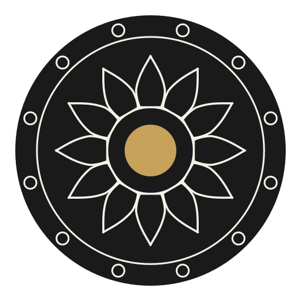
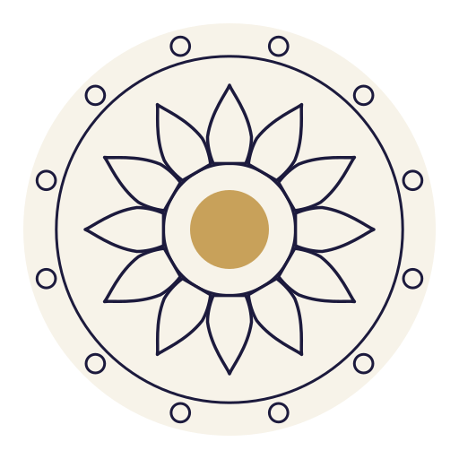

1 · tanka
The struck coin, exactly as round one had it — the whole sanctum plan chased into one solid disc: waterline groove, twelve sun-seats, the lotus engraved petal by petal, gold only where the Lord stands. The emboss / foil / wax register.

64
32
16
